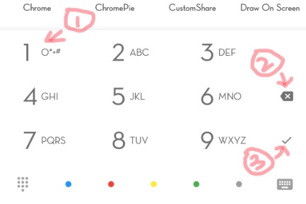
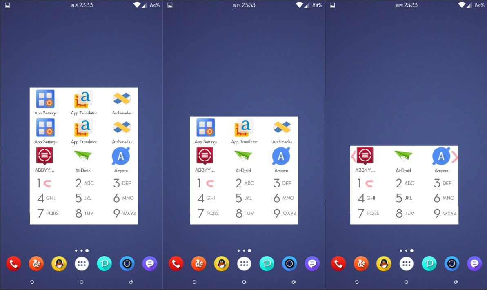
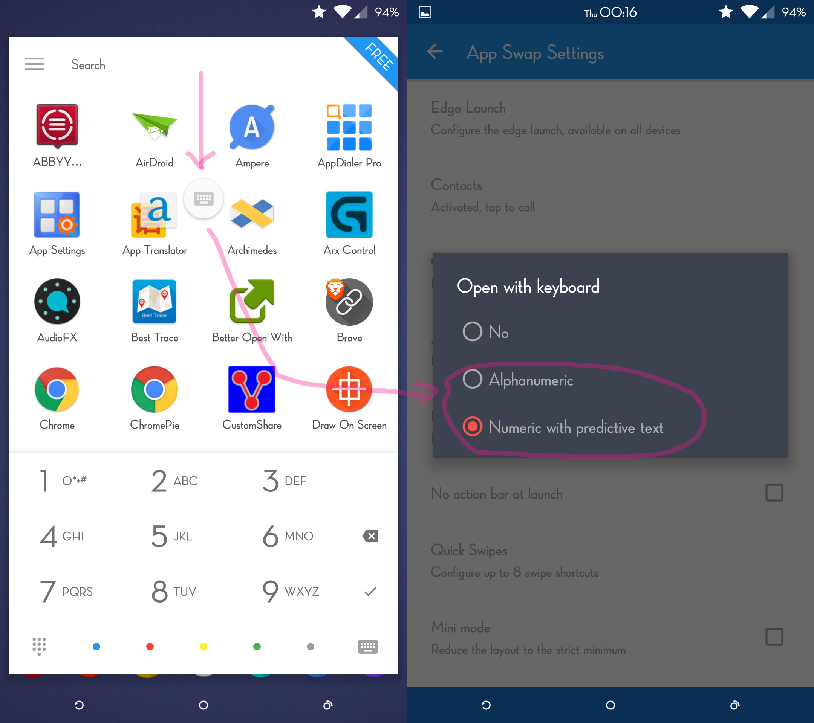
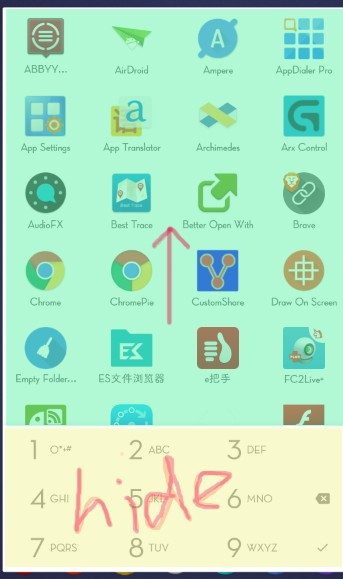
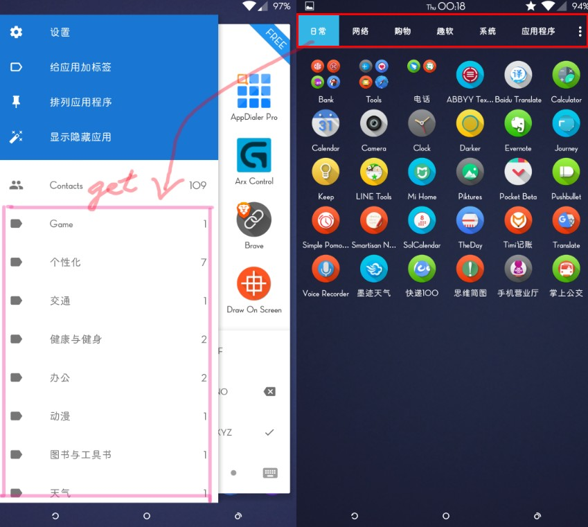
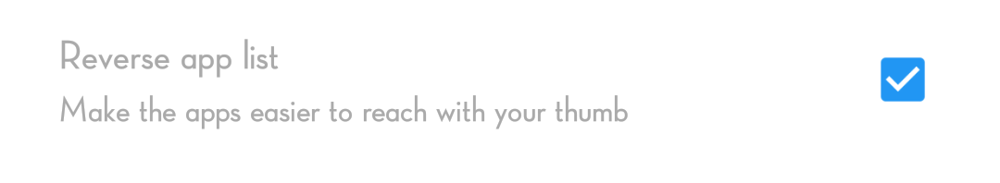
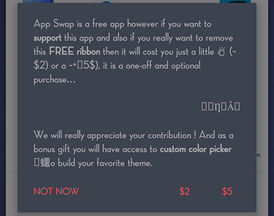
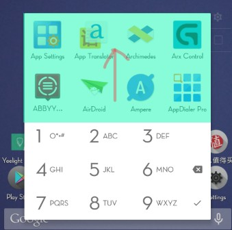

谢谢你的来信，因为在Demo上花费了一些时间，没有及时回信。
关于你在Email中寻求的建议，为了让你理解，我想先花费一些时间说说T9-Pinyin。
Pinyin
Pinyin是中文字母拉丁字母化的一种方式。一段文字中的中文和Pinyin的个数是一一对应的。
一对一
大多数情况下，一个中文字母对应一个拼音，例如
全拼
中 国 <–> Zhong Guo
T9
中 国 <–> Z G
(英文翻译是 China)
一对多
还有一些中文字母在不同情况下对应不同拼音，例如
全拼
银 行 <–> Yin Hang
行 走 <–> Xing ZouT9
银 行 <–> Y H
行 走 <–> X Z(英文翻译是 Bank、Walk)
一些例子
| English | Chinese | PinYin | T9 |
|---|---|---|---|
| Alipay | 支 付 宝 | Zhi Fu Bao | Z F B |
| Angry Bird | 愤 怒 的 小 鸟 | Feng Nu De Xiao Niao | F N D X N |
| Love | 爱 情 | Ai Qing | A Q |
| Virus | 病 毒 | Bing Du | B D |
| Grass | 小 草 | Xiao Cao | X C |
| Bank | 银 行 | Yin Hang | Y H |
| Walk | 行 走 | Xing Zou | X Z |
| Swan | 天 鹅 | Tian E | T E |
| A Dog | 一 只 狗 | Yi Zhi Gou | Y Z G |
| Bitchy | 矫 情 | Jiao Qing | J Q |
转化为 Json 格式为1
2
3
4
5
6
7
8
9
10
11
12
13
14
15
16
17
18
19
20
21
22
23
24
25
26
27
28var Pinyin = {
"a": ["爱"],
"b": ["宝"],
"c": ["病","草"],
"d": ["的","毒"],
"e": ["鹅"],
"f": ["付","愤"],
"g": ["狗"],
"h": ["行"],
"i": ["贱"],
"j": ["矫","就"],
"k": [],
"l": [],
"m": [],
"n": ["怒","鸟"],
"o": [],
"p": [],
"q": ["情"],
"r": ["人"],
"s": ["是"],
"t": ["天"],
"u": [],
"v": [],
"w": [],
"x": ["小","行"],
"y": ["银","一"],
"z": ["支","走","只"]
}
注意 Pinyin [ h ] 和 Pinyin [ x ] 中都有 “*行“
最后是一个Demo，帮助你理解。
建议
精简
UI
①②

标准模式大而全，迷你模式我认为应该更快速，更精简，将一些不常用的删除。
①②③都可以取消。
①的使用率太低了却占用了一个很重要的位置，很少有应用是全字符的。而且通过匹配应用名中其他拉丁字母或者更改应用别名来取代①的作用。
我不认为会有很多应用名字全为
×&#@$
而如果应用名字是
App ! Name ^^^
我们也可以通过 App 或者 Name 来匹配。
如果应用名为
A!p#p$N*a!m&e
我想没人喜欢这样的名字，而且我们可以通过 App Swap 中修改应用的显示名为
AppName
把②换到①的位置将③删除，迷你模式将变成这样。

这时候 T9 数字刚好对应上方的应用图标，可以通过长按或者滑动 T9 数字来快速启动应用
我想你可以通过以下应用获得更轻的想法
和更快的算法
https://github.com/pilgr/Paper
逻辑

首页下拉出现的输入法 应该和启动时打开的键盘相同，由设置中决定。

在绿色区域向上滑动时 黄色区域应该隐藏
其他
给应用分类真是个麻烦的事情。
是否可以通过 Navo Launch 导入。

BUG
信息
- App Swap 1.00.468
- Nexus 5
- Andriod 5.1.1
问题
- T9模式下，拼音筛选无法使用删除键。
GIF 我不知道这两个选项如何生效，或者说没有效果？
捐赠乱码
这个也许是我ROM字体不全
T9 模式下，Pinyin无法从中间开始匹配
迷你模式绿色区域向上滑动无法显示更过应用
